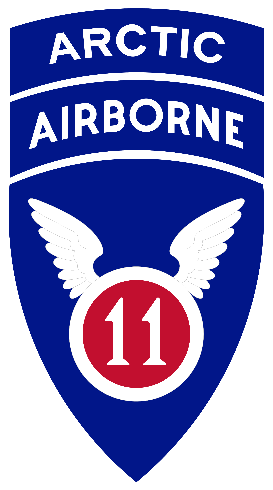
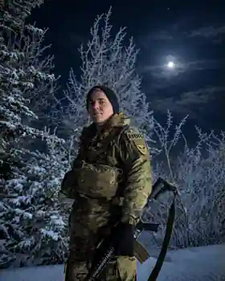

About
Personal Profile
I have spent much of my adult life moving between universities, military service, mountains, unfamiliar countries, and technical projects.
Outside research, I am usually reading, hiking, building something unnecessary on a computer, or planning somewhere else to go. My family roots are in Norway and Italy. Travel has taken me across most of the United States and through Japan, Morocco, France, Algeria, and Spain; the two sights I still return to are the aurora borealis and cherry blossoms.
Those experiences are also part of why I want to pursue a PhD in statistics. I am most interested in problems where information is incomplete, systems are changing, and decisions still carry real consequences; I want the methodological depth to do more than apply existing tools—to develop better ones for detecting change, quantifying uncertainty, and anticipating dangerous trajectories before the available options narrow.
01 / Military Service
U.S. Army
Prior to enrolling in graduate studies, I enlisted as a paratrooper and squad leader in an airborne infantry unit. It remains one of the most formative parts of my background.
As a non-commissioned officer, I was responsible for leading soldiers, maintaining accountability and readiness, and communicating clearly in environments where incomplete information, physical stress, and changing conditions were routine. Much of that experience took place in Alaska and included Arctic and extreme-cold-weather training and operations.
It left me with a lasting preference for clear communication, explicit assumptions, and plans that still work when conditions are less orderly than expected. More broadly, it shaped how I think about leadership, uncertainty, and responsibility.
- Role
- Paratrooper · Squad Leader
- Branch
- U.S. Army Infantry
- Environment
- Alaska · Arctic · Extreme Cold
- Formation
- 1-501st Parachute Infantry Regiment, 2nd Brigade Combat Team, 11th Airborne Division



02 / Outside the Model
Mountains & movement
Hiking and mountaineering are my main counterweight to screen-bound work: long approaches, exposed ridgelines, cold weather, unusual geology, and the perspective that comes from seeing a place at human scale.
Chronological from 2018 to 2026. Vertical position represents published elevation above sea level; the connecting line indicates sequence, not continuous terrain. Select a point for a short field note.
Viewpoints and trail endpoints are labeled as such; elevations are not presented as summit claims where they are not summits.
Travel sits naturally beside the mountains for me. I have crossed most of the United States and visited nearly every national park, along with travel through Japan, Morocco, France, Algeria, and Spain. The places blur together before the images do: the aurora borealis still feels almost unreal, while cherry blossoms are memorable partly because they disappear so quickly.
03 / Reading
The shelf
A small selection of current and recent reading: statistics beside military history, biography, fiction, and light novels.
04 / Off the Clock
The rest of it
Most of my downtime is less complicated than the work.
I listen mostly to punk, metal, and rock, watch more horror than anything else, and have a particular weakness for Eighty-Six, Chainsaw Man, and Dark Souls. I also maintain a long-running interest in folklore, cryptids, demonology, and paranormal history, which I hope to turn into a casual podcast.
Most of the rest is simpler: books, technical side projects, travel, my longtime partner, and cats.